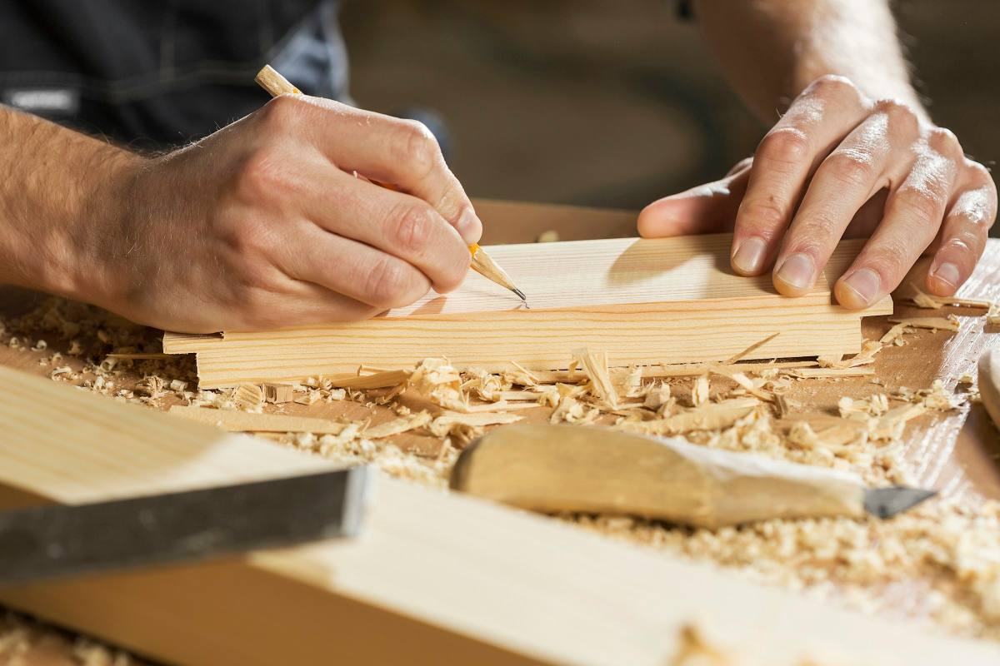
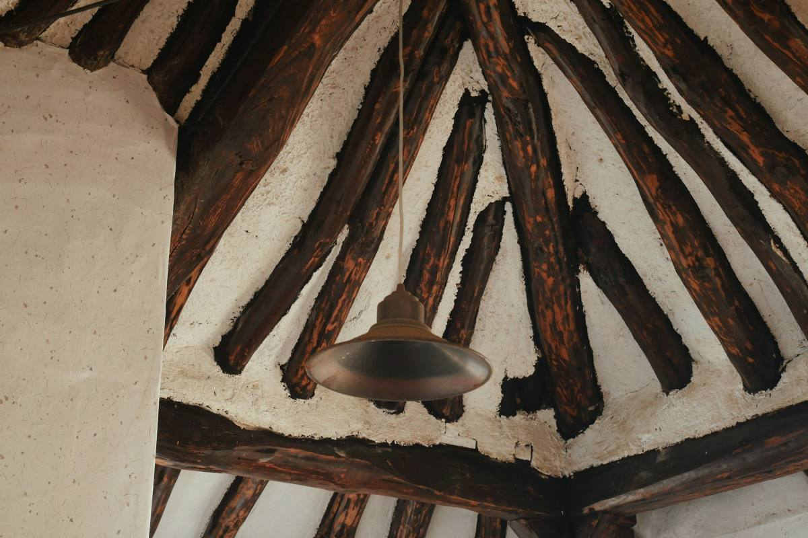
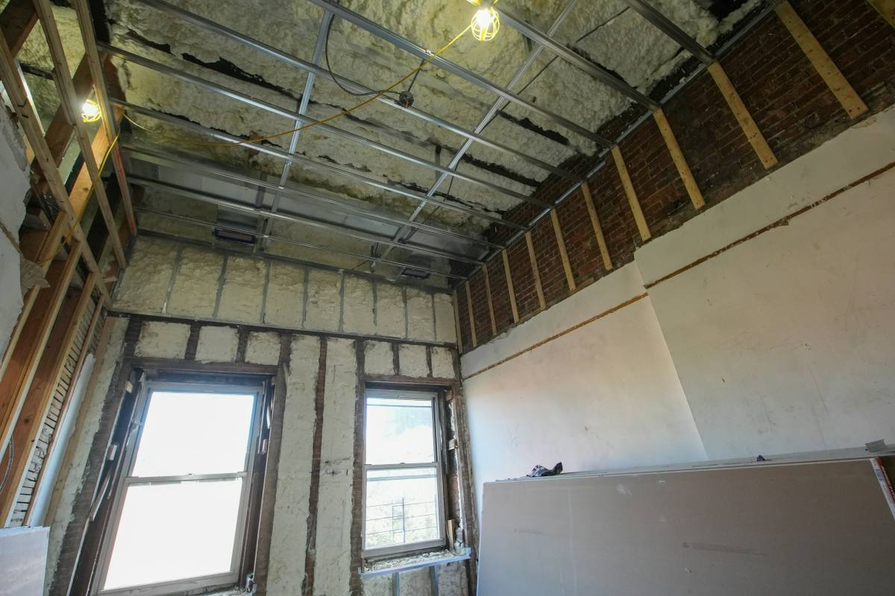

참고 이미지
참고 이미지전화
집 위치와 고칠 곳을 알려 주세요.

참고 이미지현장 보기
직접 가서 봅니다. 돈 받지 않습니다.

참고 이미지견적
현장을 보고 견적을 드립니다.

참고 이미지공사·사진 소식
공사 중 사진을 카톡으로 보내 드립니다.
충남 홍성 · 시골집 고치는 일 15년
단열·창호·지붕, 재래식 부엌·화장실 입식으로, 기름보일러 교체. 홍성·예산·청양·보령까지 다닙니다.
전화 010-0000-0000 · 일요일은 쉽니다
참고 이미지집 위치와 고칠 곳을 알려 주세요.

참고 이미지직접 가서 봅니다. 돈 받지 않습니다.

참고 이미지현장을 보고 견적을 드립니다.

참고 이미지공사 중 사진을 카톡으로 보내 드립니다.
전기·설비는 아는 기술자분들을 불러 같이 합니다. 슬레이트 철거는 허가받은 업체가 하고, 섬돌집고침은 새 지붕을 올립니다.
빈집 사기 전에 집 상태를 같이 봐 달라는 분도 계십니다. 그럴 때도 같이 가 드립니다.
시안 B는 첫 화면과 분위기를 보여 드리는 견본입니다. 고르시면 나머지 섹션을 이 모양으로 이어 붙입니다.